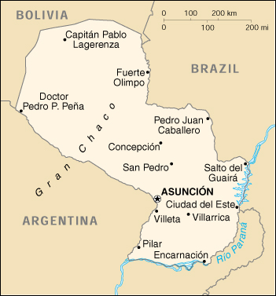

{kind=link}


| Paraguay |
|
|  | |
| Introduction |
Background: In the disastrous War of the Triple Alliance (1865-70), Paraguay lost two-thirds of all adult males and much of its territory. It stagnated economically for the next half century. In the Chaco War of 1932-35, large, economically important areas were won from Bolivia. The 35-year military dictatorship of Alfredo STROESSNER was overthrown in 1989, and relatively free and regular presidential elections have been held since then.
| Geography |
Location: Central South America, northeast of Argentina
Geographic coordinates: 23 00 S, 58 00 W
Map references: South America
Area:
total:
406,750 sq km
land:
397,300 sq km
water:
9,450 sq km
Area - comparative: slightly smaller than California
Land boundaries:
total:
3,920 km
border countries:
Argentina 1,880 km, Bolivia 750 km, Brazil 1,290 km
Coastline: 0 km (landlocked)
Maritime claims: none (landlocked)
Climate: subtropical to temperate; substantial rainfall in the eastern portions, becoming semiarid in the far west
Terrain: grassy plains and wooded hills east of Rio Paraguay; Gran Chaco region west of Rio Paraguay mostly low, marshy plain near the river, and dry forest and thorny scrub elsewhere
Elevation extremes:
lowest point:
junction of Rio Paraguay and Rio Parana 46 m
highest point:
Cerro San Rafael 850 m
Natural resources: hydropower, timber, iron ore, manganese, limestone
Land use:
arable land:
6%
permanent crops:
0%
permanent pastures:
55%
forests and woodland:
32%
other:
7% (1993 est.)
Irrigated land: 670 sq km (1993 est.)
Natural hazards: local flooding in southeast (early September to June); poorly drained plains may become boggy (early October to June)
Environment - current issues: deforestation (an estimated 2 million hectares of forest land were lost from 1958-85); water pollution; inadequate means for waste disposal present health risks for many urban residents
Environment - international agreements:
party to:
Biodiversity, Climate Change, Climate Change-Kyoto Protocol, Desertification, Endangered Species, Hazardous Wastes, Law of the Sea, Ozone Layer Protection, Wetlands
signed, but not ratified:
Nuclear Test Ban
Geography - note: landlocked; lies between Argentina, Bolivia, and Brazil
| People |
Population: 5,585,828 (July 2000 est.)
Age structure:
0-14 years:
39% (male 1,109,887; female 1,074,815)
15-64 years:
56% (male 1,574,978; female 1,563,872)
65 years and over:
5% (male 120,662; female 141,614) (2000 est.)
Population growth rate: 2.64% (2000 est.)
Birth rate: 31.27 births/1,000 population (2000 est.)
Death rate: 4.81 deaths/1,000 population (2000 est.)
Net migration rate: -0.09 migrant(s)/1,000 population (2000 est.)
Sex ratio:
at birth:
1.05 male(s)/female
under 15 years:
1.03 male(s)/female
15-64 years:
1.01 male(s)/female
65 years and over:
0.85 male(s)/female
total population:
1.01 male(s)/female (2000 est.)
Infant mortality rate: 30.81 deaths/1,000 live births (2000 est.)
Life expectancy at birth:
total population:
73.68 years
male:
71.22 years
female:
76.27 years (2000 est.)
Total fertility rate: 4.16 children born/woman (2000 est.)
Nationality:
noun:
Paraguayan(s)
adjective:
Paraguayan
Ethnic groups: mestizo (mixed Spanish and Amerindian) 95%
Religions: Roman Catholic 90%, Mennonite, and other Protestant
Languages: Spanish (official), Guarani (spoken by most of rural population)
Literacy:
definition:
age 15 and over can read and write
total population:
92.1%
male:
93.5%
female:
90.6% (1995 est.)
| Government |
Country name:
conventional long form:
Republic of Paraguay
conventional short form:
Paraguay
local long form:
Republica del Paraguay
local short form:
Paraguay
Data code: PA
Government type: constitutional republic
Capital: Asuncion
Administrative divisions: 17 departments (departamentos, singular - departamento) and one capital city; Alto Paraguay, Alto Parana, Amambay, Asuncion (city), Boqueron, Caaguazu, Caazapa, Canindeyu, Central, Concepcion, Cordillera, Guaira, Itapua, Misiones, Neembucu, Paraguari, Presidente Hayes, San Pedro
Independence: 14 May 1811 (from Spain)
National holiday: Independence Days, 14-15 May (1811)
Constitution: promulgated 20 June 1992
Legal system: based on Argentine codes, Roman law, and French codes; judicial review of legislative acts in Supreme Court of Justice; does not accept compulsory ICJ jurisdiction
Suffrage: 18 years of age; universal and compulsory up to age 75
Executive branch:
chief of state:
President Luis GONZALEZ Macchi (since 28 March 1999); vice president (vacant); note - the president is both the chief of state and head of government
head of government:
President Luis GONZALEZ Macchi (since 28 March 1999); vice president (vacant); note - the president is both the chief of state and head of government
cabinet:
Council of Ministers nominated by the president
elections:
president and vice president elected on the same ticket by popular vote for five-year terms; election last held 10 May 1998 (next to be held NA May 2003)
election results:
Raul CUBAS Grau elected president; percent of vote - 55.3%; resigned 28 March 1999
note:
President Luis GONZALEZ Macchi, formerly president of the Chamber of Senators, constitutionally succeeded President Raul CUBAS Grau, who resigned after being impeached soon after the assassination of Vice President Luis Maria ARGANA; the successor to ARGANA will be decided in an election expected to be held in August 2000
Legislative branch:
bicameral Congress or Congreso consists of the Chamber of Senators or Camara de Senadores (45 seats; members are elected by popular vote to serve five-year terms) and the Chamber of Deputies or Camara de Diputados (80 seats; members are elected by popular vote to serve five-year terms)
elections:
Chamber of Senators - last held 10 May 1998 (next to be held NA May 2003); Chamber of Deputies - last held 10 May 1998 (next to be held NA May 2003)
election results:
Chamber of Senators - percent of vote by party - NA; seats by party - Colorado Party 25, PLRA 13, PEN 7; Chamber of Deputies - percent of vote by party - NA; seats by party - Colorado Party 45, PLRA 26, PEN 9
Judicial branch: Supreme Court of Justice or Corte Suprema de Justicia, judges appointed on the proposal of the Counsel of Magistrates or Consejo de la Magistratura
Political parties and leaders: Authentic Radical Liberal Party or PLRA [Julio Cesar "Yolito" FRANCO]; Christian Democratic Party or PDC [Miguel MONTANER]; Febrerista Revolutionary Party or PRF [Carlos Maria LJUBETIC]; National Encounter or PEN [Mario PAZ Castaing]; National Republican Association - Colorado Party [acting president Bader RACHID LICHI]
Political pressure groups and leaders: National Workers Central or CNT; Paraguayan Workers Confederation or CPT; Roman Catholic Church; Unitary Workers Central or CUT
International organization participation: CCC, ECLAC, FAO, G-77, IADB, IAEA, IBRD, ICAO, ICFTU, ICRM, IDA, IFAD, IFC, IFRCS, ILO, IMF, IMO, Intelsat, Interpol, IOC, IOM, ISO (correspondent), ITU, LAES, LAIA, Mercosur, NAM (observer), OAS, OPANAL, OPCW, PCA, RG, UN, UNCTAD, UNESCO, UNIDO, UPU, WCL, WHO, WIPO, WMO, WToO, WTrO
Diplomatic representation in the US:
chief of mission:
Ambassador Juan Esteban AGUIRRE MARTINEZ
chancery:
2400 Massachusetts Avenue NW, Washington, DC 20008
telephone:
[1] (202) 483-6960 through 6962
FAX:
[1] (202) 234-4508
consulate(s) general:
Kansas City (Kansas), Miami, New Orleans, New York
Diplomatic representation from the US:
chief of mission:
Ambassador (vacant); Charge d'Affaires Stephan G. MCFARLAND
embassy:
1776 Avenida Mariscal Lopez, Casilla Postal 402, Asuncion
mailing address:
Unit 4711, APO AA 34036-0001
telephone:
[595] (21) 213-715
FAX:
[595] (21) 213-728
Flag description: three equal, horizontal bands of red (top), white, and blue with an emblem centered in the white band; unusual flag in that the emblem is different on each side; the obverse (hoist side at the left) bears the national coat of arms (a yellow five-pointed star within a green wreath capped by the words REPUBLICA DEL PARAGUAY, all within two circles); the reverse (hoist side at the right) bears the seal of the treasury (a yellow lion below a red Cap of Liberty and the words Paz y Justicia (Peace and Justice) capped by the words REPUBLICA DEL PARAGUAY, all within two circles)
| Economy |
Economy - overview: Paraguay has a market economy marked by a large informal sector. The informal sector features both reexport of imported consumer goods to neighboring countries as well as the activities of thousands of microenterprises and urban street vendors. Because of the importance of the informal sector, accurate economic measures are difficult to obtain. A large percentage of the population derive their living from agricultural activity, often on a subsistence basis. The formal economy grew by an average of about 3% annually in 1995-97, but GDP declined slightly in 1998 and 1999. On a per capita basis, real income has stagnated at 1980 levels. Most observers attribute Paraguay's poor economic performance to political uncertainty, corruption, lack of progress on structural reform, and deficient infrastructure. Growth should recover in 2000, perhaps to 2%.
GDP: purchasing power parity - $19.9 billion (1999 est.)
GDP - real growth rate: -1% (1999 est.)
GDP - per capita: purchasing power parity - $3,650 (1999 est.)
GDP - composition by sector:
agriculture:
28%
industry:
21%
services:
51% (1999 est.)
Population below poverty line: 32% (1997-98 est.)
Household income or consumption by percentage share:
lowest 10%:
0.7%
highest 10%:
46.6% (1995)
Inflation rate (consumer prices): 5% (1999)
Labor force: 1.7 million (1996)
Labor force - by occupation: agriculture 45%
Unemployment rate: 12% (1998 est.)
Budget:
revenues:
$1.9 billion
expenditures:
$2.1 billion, including capital expenditures of $700 million (1995 est.)
Industries: sugar, cement, textiles, beverages, wood products
Industrial production growth rate: -4% (1999 est.)
Electricity - production: 50.324 billion kWh (1998)
Electricity - production by source:
fossil fuel:
0.12%
hydro:
99.66%
nuclear:
0%
other:
0.22% (1998)
Electricity - consumption: 1.494 billion kWh (1998)
Electricity - exports: 45.307 billion kWh (1998)
Electricity - imports: 0 kWh (1998)
Agriculture - products: cotton, sugarcane, soybeans, corn, wheat, tobacco, cassava (tapioca), fruits, vegetables; beef, pork, eggs, milk; timber
Exports: $3.1 billion (f.o.b., 1999 est.)
Exports - commodities: soybeans, feed, cotton, meat, edible oils
Exports - partners: Brazil, Argentina, EU
Imports: $3.2 billion (f.o.b., 1999 est.)
Imports - commodities: road vehicles, consumer goods, tobacco, petroleum products, electrical machinery
Imports - partners: Brazil 34%, US, Argentina, Uruguay, EU, Hong Kong (1998)
Debt - external: $2.7 billion (1999)
Economic aid - recipient: $NA
Currency: 1 guarani (G) = 100 centimos
Exchange rates: guarani (G) per US$ - 3.332.0 (January 2000), 3,119.1 (1999), 2,726.5 (1998), 2,177.9 (1997), 2,056.8 (1996), 1,963.0 (1995); note - since early 1998, the exchange rate has operated as a managed float; prior to that, the exchange rate was determined freely in the market
Fiscal year: calendar year
| Communications |
Telephones - main lines in use: 167,000 (1995)
Telephones - mobile cellular: 15,807 (1995)
Telephone system:
meager telephone service; principal switching center is Asuncion
domestic:
fair microwave radio relay network
international:
satellite earth station - 1 Intelsat (Atlantic Ocean)
Radio broadcast stations: AM 46, FM 27, shortwave 6 (three inactive) (1998)
Radios: 925,000 (1997)
Television broadcast stations: 10 (1997)
Televisions: 515,000 (1997)
Internet Service Providers (ISPs): 4 (1999)
| Transportation |
Railways:
total:
971 km
standard gauge:
441 km 1.435-m gauge
narrow gauge:
60 km 1.000-m gauge
note:
there are 470 km of various gauges that are privately owned
Highways:
total:
29,500 km
paved:
15,000 km
unpaved:
14,500 km (1999)
Waterways: 3,100 km
Ports and harbors: Asuncion, Villeta, San Antonio, Encarnacion
Merchant marine:
total:
21 ships (1,000 GRT or over) totaling 30,287 GRT/32,510 DWT
ships by type:
cargo 15, chemical tanker 1, petroleum tanker 4, roll-on/roll-off 1 (1999 est.)
Airports: 937 (1999 est.)
Airports - with paved runways:
total:
10
over 3,047 m:
3
1,524 to 2,437 m:
3
914 to 1,523 m:
4 (1999 est.)
Airports - with unpaved runways:
total:
927
over 3,047 m:
1
1,524 to 2,437 m:
29
914 to 1,523 m:
346
under 914 m:
551 (1999 est.)
| Military |
Military branches: Army, Navy (includes Naval Air and Marines), Air Force
Military manpower - military age: 17 years of age
Military manpower - availability:
males age 15-49:
1,349,800 (2000 est.)
Military manpower - fit for military service:
males age 15-49:
974,313 (2000 est.)
Military manpower - reaching military age annually:
males:
56,701 (2000 est.)
Military expenditures - dollar figure: $125 million (FY98)
Military expenditures - percent of GDP: 1.4% (FY98)
| Transnational Issues |
Illicit drugs: illicit producer of cannabis, most or all of which is consumed in South America; transshipment country for Bolivian cocaine headed for Southern Cone markets and Europe and a limited amount to the US